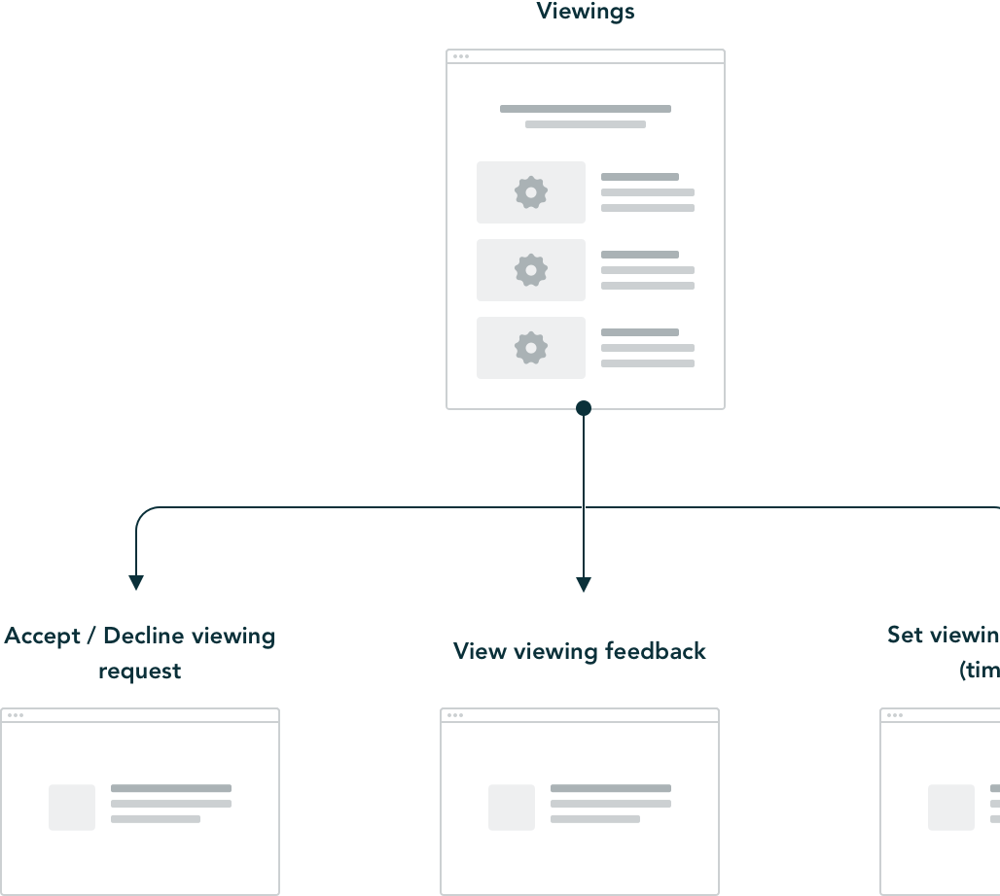

As there was a lot of work involved we needed to work on a strategy
About two years into my career at Nested the cries from our customers to have an online account management section were loud, so as a design team we needed to push this forward and advocate for our users.
Our small two person design team set about putting together a proposal of our vision for what we saw being included in our customer’s account. From managing their sale, to a group of tools, we wanted the account to be more than just a way to manage your way through the house sale process with Nested. We wanted to create an industry defining experience.
With this in mind, we decided that a simple information architecture diagram was our best approach and put the idea to all three the co-founders and our wider product and technology team.
